The system as it is
Architecture
Deployment
State
Security
SYSTEM ARCHITECTURE · PAYMENT WORKFLOWS · ASYNC DESIGN
Architecture research, workflow analysis and technical storytelling for an enterprise payment platform.
A 28-slide narrative connecting the system, its failure mode and a proposed asynchronous redesign.
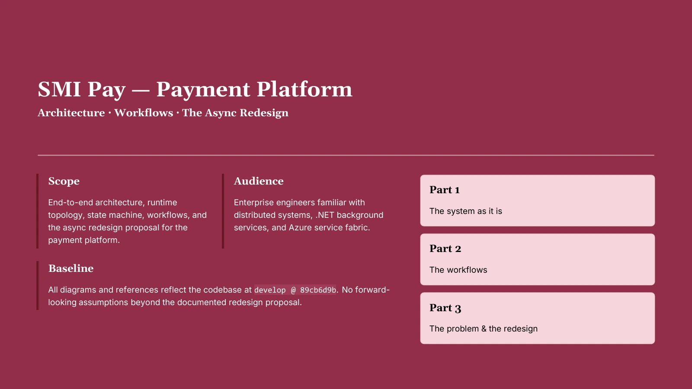
28 slides covering the current platform, payment workflows, production failure mode and proposed async redesign.
SLIDE 01 / 28The customer can see an error.
The platform can continue processing.
And the payment can still succeed.
That was the central problem behind this work.
I developed a 28-slide technical deck that translated a complex payment platform into a structured story covering its architecture, payment lifecycle, production constraints, latency problem, root causes and proposed asynchronous redesign.
The objective was to make the technical logic easier to understand, discuss and act on.
01 / THE ASSIGNMENT
The challenge was not a lack of technical information. It was turning that information into a coherent system story.
The platform already had architecture, source code, workflows, performance findings, state transitions and operational constraints. But those pieces needed to be connected.
My work focused on organising the material around a sequence that a technical stakeholder could follow. These questions became the backbone of the deck.
02 / STRUCTURING THE STORY
Architecture
Deployment
State
Security
Submit flow
Capture flow
Critical-path cost
15-second wall · Production incident
Root cause · Async V2
Reliability · Roadmap
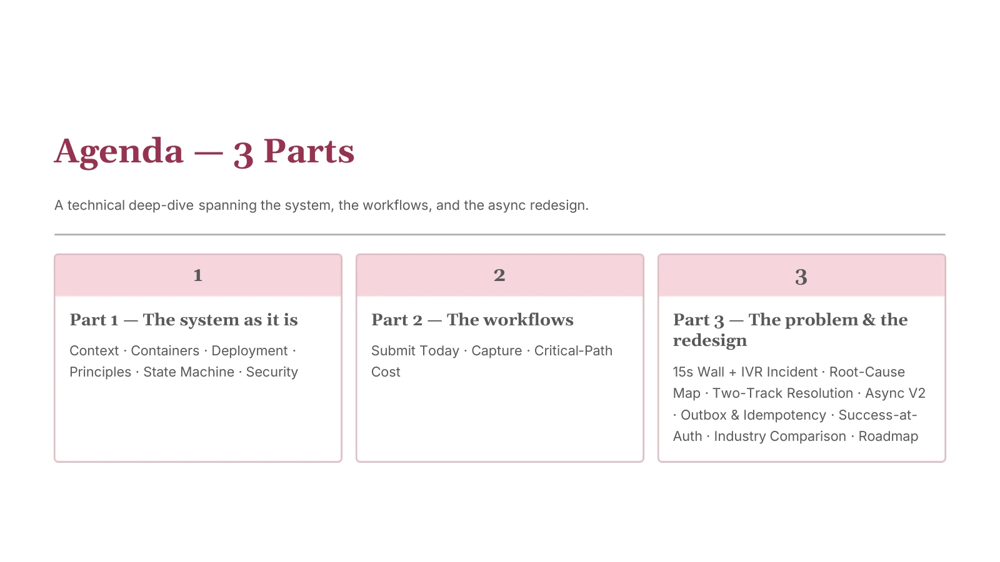
The presentation moves from system context to workflows, then from the failure to a proposed redesign.
SLIDE 02 / 2803 / FIRST: UNDERSTAND THE PLATFORM

Clients, the SMI Pay platform and the external services that influence the payment path.
SLIDE 04 / 28The platform sits between multiple client channels and external dependencies. The story begins with where requests enter, which internal services process them and which external systems they depend on.
Synchronous calls introduce external latency into the customer-facing request path. The system-context diagram gave the rest of the deck a reference point.
04 / INSIDE THE PLATFORM
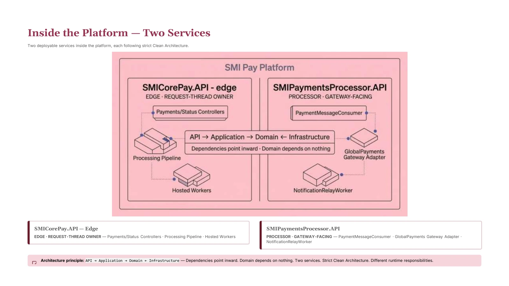
The edge and processor have distinct roles within the same platform.
SLIDE 05 / 28The platform is organised around two deployable services.
SMICorePay.API owns the edge of the system, including incoming requests, processing stages and hosted background workers.
SMIPaymentsProcessor.API handles gateway-facing work, including the payment consumer and Global Payments integration.
The redesign required changing where particular work happens in relation to the client’s request thread.
Same platform.
Different execution boundary.
05 / THE PAYMENT LIFECYCLE
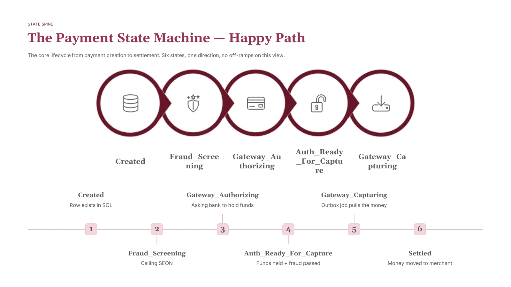
The happy path from creation through screening, authorisation, capture and settlement.
SLIDE 12 / 28The deck maps the payment lifecycle from creation through fraud screening, authorisation readiness, capture and settlement. The redesign still has to respect those payment states.
The core state model remains recognisable. What changes is the relationship between those states and the synchronous customer request.
06 / THE CONSTRAINT
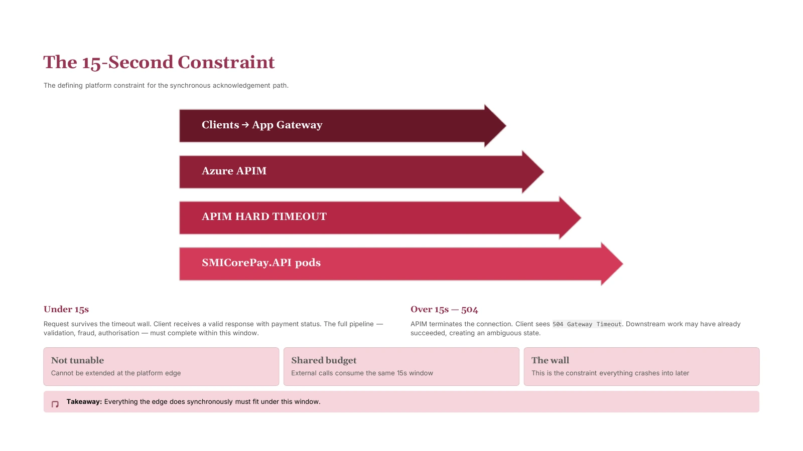
The acknowledgement window described in the platform deck.
SLIDE 09 / 28The customer-facing acknowledgement path sits behind an Azure APIM boundary with a hard timeout in this deployment.
If the synchronous work completes inside the window, the customer receives a valid result. If it exceeds the window, the connection can terminate with a 504 Gateway Timeout.
Downstream payment processing may continue even after the client connection has ended.
The client and the platform can disagree
about whether the payment succeeded.
07 / WHERE THE TIME GOES
POST /payments starts the customer’s clock.
Validate the signed token, including key retrieval in the documented current path.
Run merchant validation and duplicate checks in sequence.
Wait for the SEON result on the request thread.
Write the Created payment state in SQL.
Make the synchronous internal authorisation request.
Wait for the Global Payments SOAP response for the base payment.
A service fee can require an additional authorisation cycle.
Commit Auth_Ready_For_Capture and the capture-outbox record.
Only now can the customer receive the result.
08 / NOT EVERYTHING WAS BROKEN
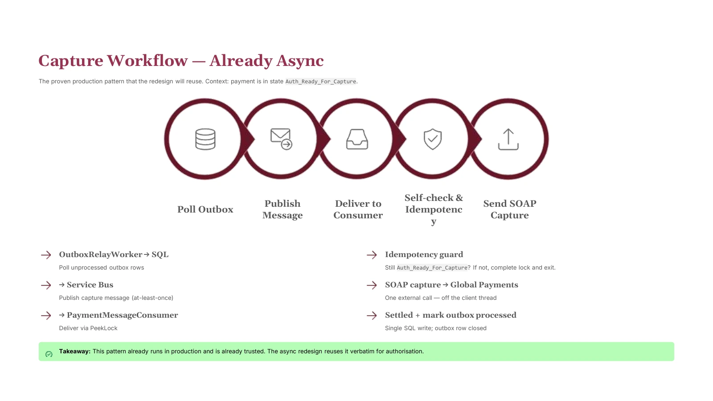
The existing outbox, relay, queue and consumer pattern.
SLIDE 17 / 28The existing capture flow already used a production pattern based on a transactional outbox, message relay, Azure Service Bus, consumer processing and idempotency checks.
That became important evidence. The proposed architecture could reuse a reliability pattern that the platform was already operating.
Extend an existing
reliability model.
09 / THE INCIDENT THAT MADE THE PROBLEM VISIBLE
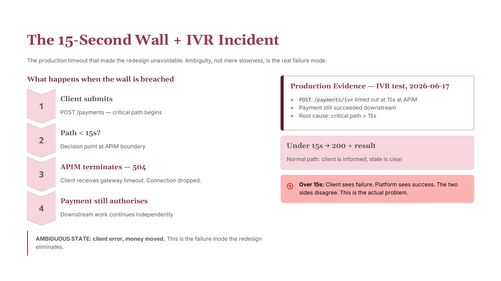
The deck’s production IVR test illustrates the disagreement between the client response and downstream payment outcome.
SLIDE 20 / 28A production IVR test provided the clearest example of the failure mode. The request exceeded the APIM timeout and the client received a gateway error, while downstream payment processing continued successfully.
This was more serious than an ordinary performance issue. The same transaction could appear to have conflicting outcomes depending on which side of the boundary someone observed.
10 / FROM INCIDENT TO ROOT CAUSE
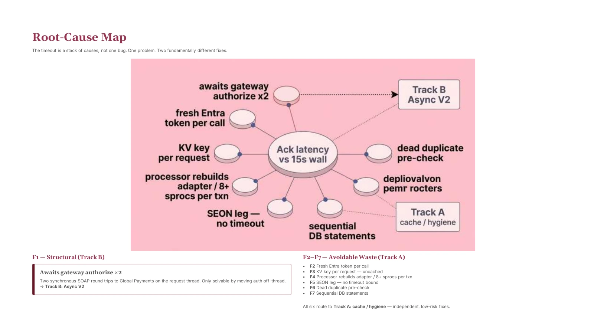
Separate the structural authorisation bottleneck from avoidable latency.
SLIDE 21 / 28Gateway authorisation remained on the synchronous path. Caching or small performance improvements could not remove that execution boundary.
Contributors included repeated token work, uncached key retrieval, processor setup, the fraud-analysis leg and sequential database operations.
Some problems could be improved incrementally. One required the request contract itself to change.
11 / THE DESIGN DECISION
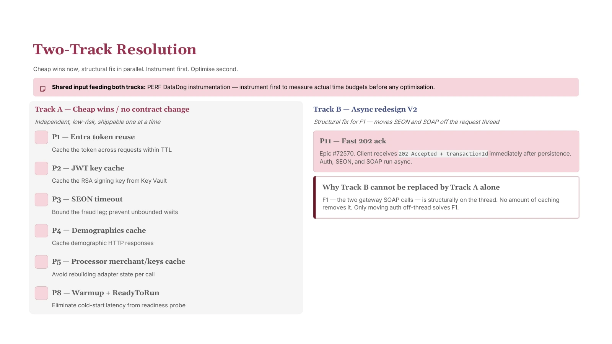
Incremental efficiency work alongside a structural redesign.
SLIDE 22 / 28Persist first.
Acknowledge quickly.
Move fraud analysis and gateway authorisation off the customer request thread.
The two-track structure kept low-risk efficiency work distinct from the structural response. The deck places instrumentation before optimisation.
12 / THE REDESIGN
PROPOSED ASYNC V2
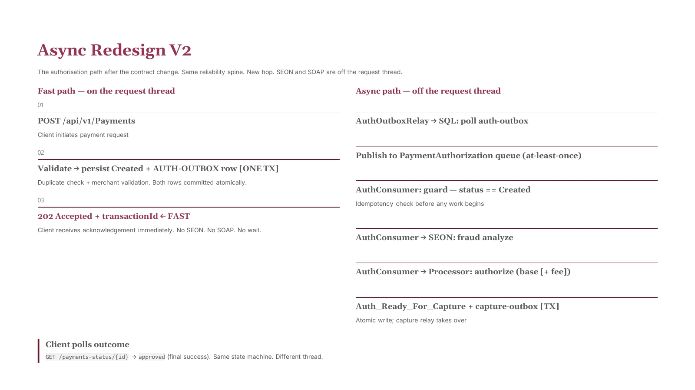
The client receives an acknowledgement after atomic persistence; fraud and authorisation continue off-thread.
SLIDE 23 / 28Accept the payment request.
Commit the payment and authorisation-outbox record together.
Return the transaction ID, then continue processing asynchronously.
The customer retrieves the authoritative outcome through the payment-status flow. Acceptance acknowledges receipt; it is not the final payment outcome.
Same payment lifecycle.
Different thread.
13 / WHY THIS IS SAFER THAN “JUST MAKE IT ASYNC”
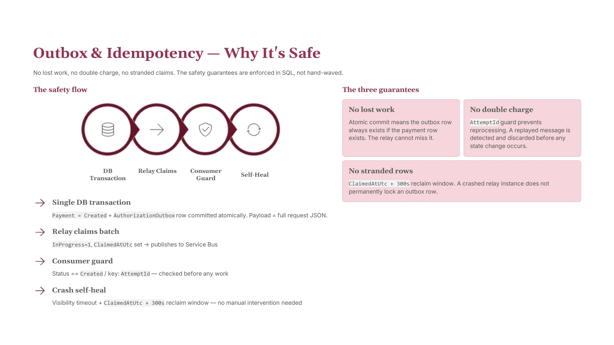
The safeguards that support the proposed asynchronous authorisation path.
SLIDE 24 / 28The design addresses latency while keeping transaction integrity part of the explanation.
14 / THE CUSTOMER CONTRACT
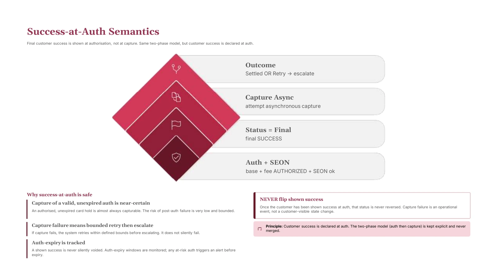
The proposed customer-success model keeps authorisation and capture distinct.
SLIDE 25 / 28The design keeps authorisation and capture as two distinct stages. Customer success is declared after successful authorisation and fraud checks, while capture continues asynchronously.
The deck also describes bounded retry, escalation and monitoring around capture. The earlier customer-facing outcome therefore has to be explained together with the operational completion path.
15 / CHECKING THE DESIGN AGAINST THE INDUSTRY
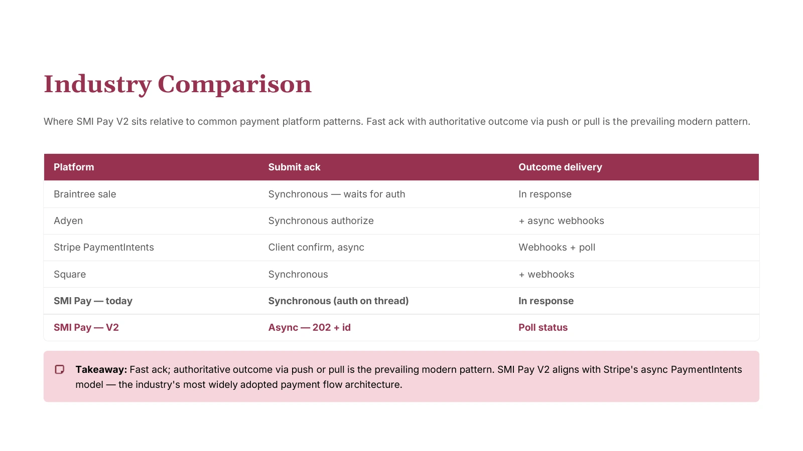
Comparing synchronous acknowledgement, asynchronous processing and outcome-delivery patterns across payment platforms.
SLIDE 26 / 28The deck compared acknowledgement and outcome-delivery patterns across several payment platforms to test the proposed SMI Pay model against established design approaches.
The comparison positioned V2 alongside models where acknowledgement and final outcome can be separated. It is reproduced as context from the original deck, rather than a current provider-integration specification.
16 / DESIGNING THE ROADMAP
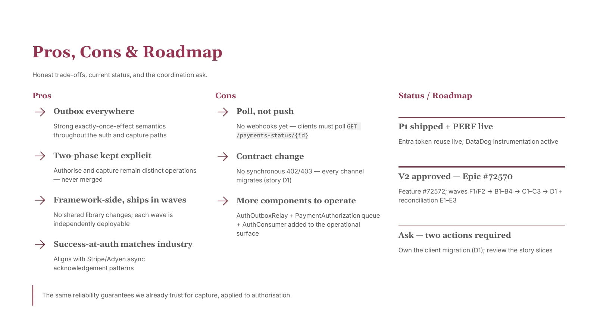
The deck’s implementation view balances benefits, adoption costs and coordination.
SLIDE 27 / 28Asynchronous reliability patterns, an explicit two-phase payment model and independently deployable changes.
Client migration requirements, additional components to operate and polling for status rather than push-based delivery in the proposed model.
The slide records the roadmap at the time the deck was prepared. The recommendation explains both why the design works and what it will cost to adopt.
17 / WHAT I ACTUALLY DID
Converted a complex platform structure into clear system-context and service-level views.
Structured the payment lifecycle from request entry through authorisation, capture and settlement.
Connected the 15-second platform constraint to the actual customer-facing failure mode.
Separated structural latency from avoidable performance waste.
Explained how the async redesign addressed the bottleneck and how the reliability model supported it.
Turned source-heavy engineering material into a coherent 28-slide narrative for a technical audience.
18 / FROM COMPLEXITY TO A DECISION STORY
Technical communication becomes valuable when it preserves engineering detail while making the decision easier to understand. That was the objective of this work.
19 / WHAT THIS PROJECT DEMONSTRATES
My role was to make the engineering problem easier to see.
20 / CLOSING STATEMENT
SMI Pay began as a dense technical problem involving services, APIs, databases, queues, fraud analysis, gateway calls, payment states and operational constraints.
The finished deck turned those pieces into one narrative:
Understand the system → Trace the payment → Expose the failure → Separate the causes → Redesign the boundary → Prove the safety → Show the implementation path
That is the type of technical storytelling I want this project to represent.
PROJECT SNAPSHOT